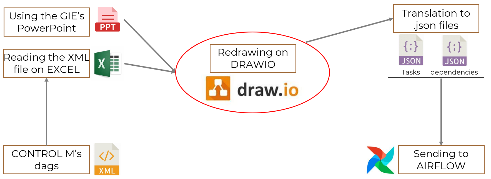
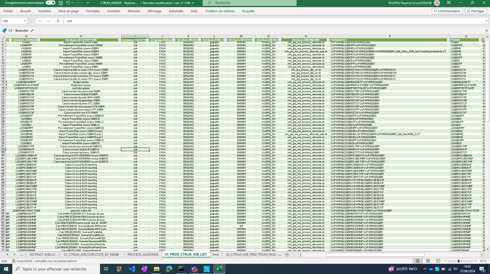
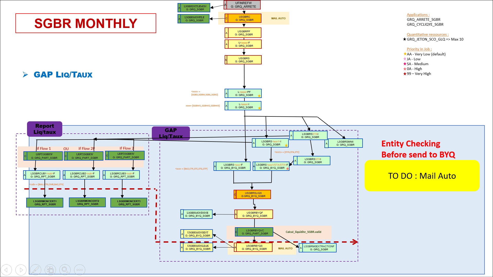
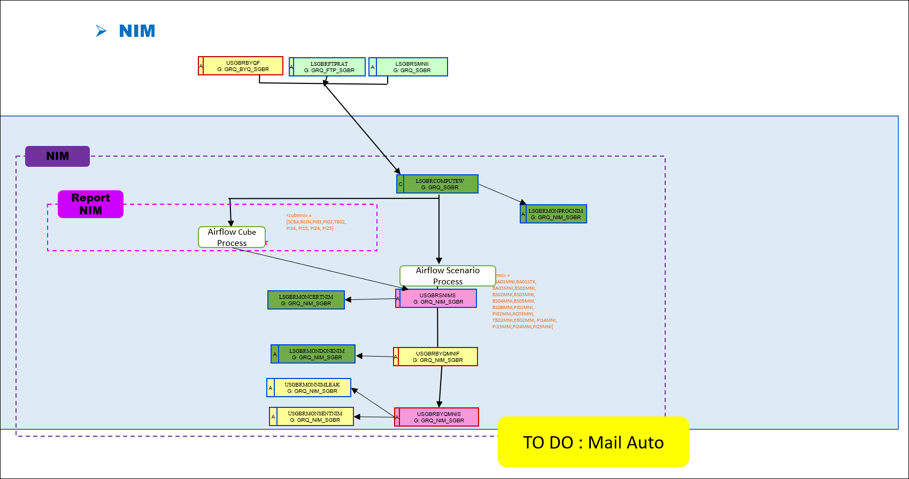
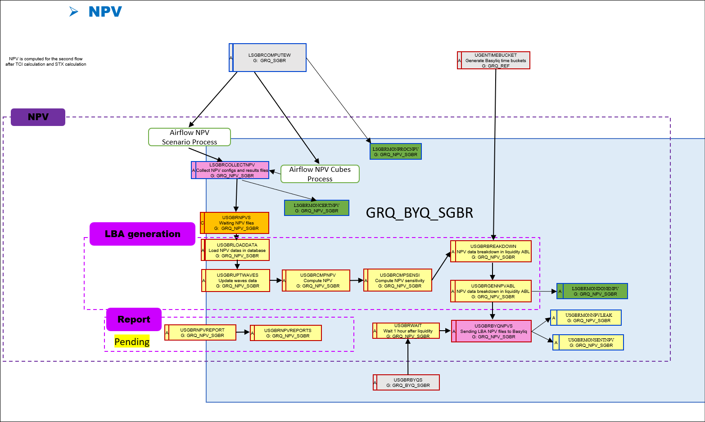
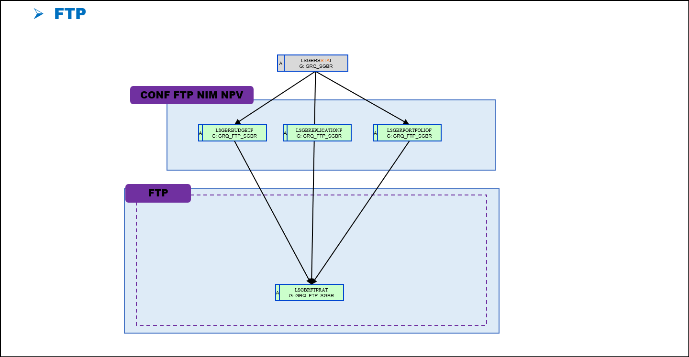
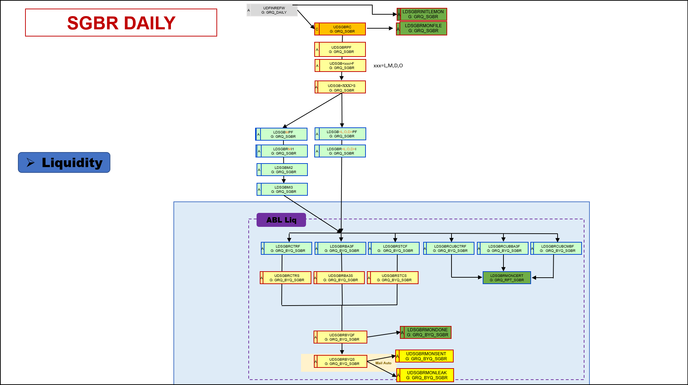
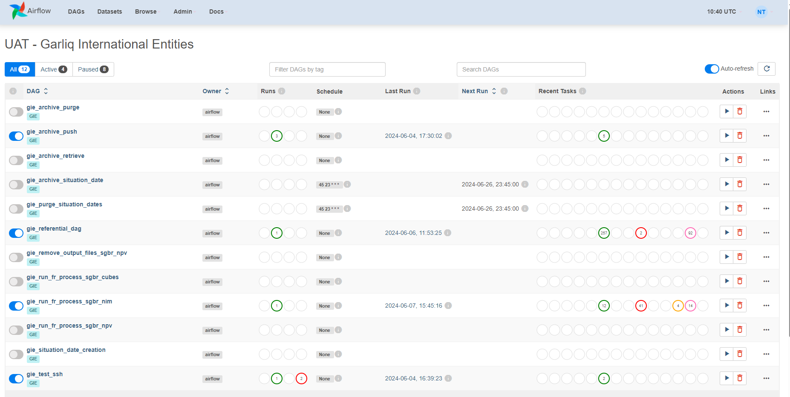
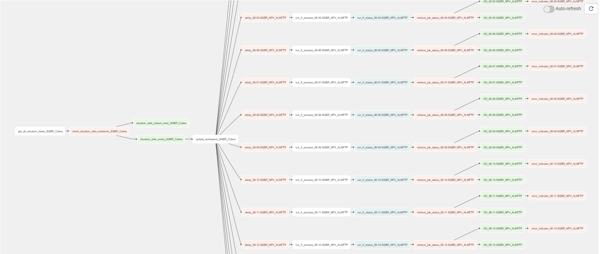
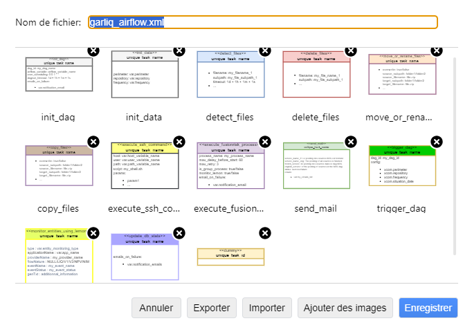

LIEU DU STAGE : 17 cours Valmy 92800 PUTEAUX / SOCIETE GENERALE PARIS LA DEFENSE
CONTEXTE
1) L’application GARLIQ: un outil considérable pour la SOCIETE GENERALE :
L’application GARLIQ est un outil utilisé par la SOCIETE GENERALE depuis maintenant plus de 15 ans. Depuis 5 ans, elle est gerée par Samuel Grosman, mon maître de stage.
Cette application est utilisée par la direction financière de la banque. Elle constitue un outil primaire et critique pour la SOCIETE GENERALE, car elle facilite la gestion des risques structurels (ALM) pour le bilan économique de la banque. On parle ici de plusieurs dizaines de milliards d’euros.
La direction financière s’appuie sur l’application GARLIQ pour calculer les risques financiers portés par le bilan économique de la banque, afin d’éviter et de prévoir au mieux les risques de liquidité, de taux, ainsi que les déséquilibres potentiels.
Le bilan de la banque est vivant et évolue constamment, notamment suite aux enjeux sociaux, politiques comme les différentes élections, sanitaires comme la pandemie de la Covid connue en 2019, ...
L’application GARLIQ est donc utilisée pour réaliser des simulations d’anticipation avec des calculs effectués de manière récurrente. Ces differents calculs sont representés par des chaînes d’orchestration se trouvant sur CONTROL M et sur AIRFLOW, deux ordonnanceurs concurrents dont le sujet sera abordé par la suite.
L’orchestration mise en place pour calculer les indicateurs des risques et des métriques est d’ailleurs à présenter a la Banque Centrale Europeenne (BCE).
Generalement, la plupart des calculs sont realisés à intervalle regulier d’ordre mensuel. Certaines simulations se doivent de suivre une orchestration hedomadaire. En tant de crise, comme par exemple suite à la déclaration de guerre en Ukraine, les élections législatives d’actualité ou encore la crise Covid19, la macro-activité se doit d’autant plus d’etre surveillée et les calculs sont administrés quotidiennement. En effet, ces évenements ont un impact considérable sur la société et sont à l’origine de potentiels grands changements économiques.
2) L’évolution actuelle de GARLIQ:
Depuis 5 ans maintenant, c’est Samuel Grosman, mon maître de stage, qui est responsable de l’application GARLIQ, en constante évolution.
Les chaînes d’orchestration qui la constituent se trouvaient jusqu’ à il y a peu de temps exclusivement sur l’ordonnanceur CONTROL M. Pour répondre à des besoins d’évolutions et de modernité en forte croissante, ces chaînes doivent etre progressivement migrées sur Airflow, un ordonnanceur concurrent.
CONTROL M et AIRFLOW éffectuent le même travail avec pour but commun de faire enchaîner une succession de tâches prédéfinies suivants des éxigences données. Cependant leurs caracteristiques divergentes poussent la SOCIETE GENERALE à se tourner vers AIRFLOW.
CONTROL M est un ordonnanceur payant et compatible aux infrastructures legacy, tandis que AIRFLOW est “open source” tout en étant en compatibilité avec les appels d’APIs (interfaces logicielles qui permettent de « connecter » un logiciel ou un service à un autre logiciel ou service afin d'échanger des données et des fonctionnalités) et à l’approche de la transformation Cloud.
La migration des chaînes d’orchestration de CONTROL M vers AIRFLOW est donc un besoin actuel de l’application GARLIQ éxigé par la SOCIETE GENERALE afin de répondre a la modernisation et au changement des systemes utilisés.
MA MISSION
1) Ma présence au sein des équipes
Le domaine informatique dans lequel j’ai effectué mon stage est composé de 3 services:
- GFR (Garliq French Retail) est le domaine qui s’occupe de gérer les relations avec les directions financières des entités FR qui font de l’ALM (gestion des risques structurels); par exemple le réseau de banque de details France (issu de la fusion SOCIETE GENERALE / Crédit Du Nord), Boursorama, Franfinance, ...
- GIE (Garliq International Entities) qui a le même rôle que GFR mais appliqué a des entités internationales telles que KB en Europe de l’est, SGMA au Maroc, SG London, SG New York ...
- GCC (Garliq Core Components) qui est le domaine géré par Samuel Grosman, mon maître de stage. Ce domaine est réservé aux composants core, socles et génériques pour l’application GARLIQ. Le domaine GCC est decomposé en 3 équipes (feature Teams):
- GAAS (Garliq as a service) qui développe les services WEB autour d’un composant de calcul de risques financiers.
- FR (FusionRisk) qui gère ce composant de calculs financiers ainsi que la relation avec l’éditeur Finastra.
- GOT pour Garliq Orchestration Team) qui gère l’offre de service autour de l’ordonnancement et de l’orchestration pour enchaîner les differents services de GAAS, afin de répondre à des besoins réccurents (calculs daily, weekly ou monthly) des 2 domaines GIE et GFR. C’est dans cette équipe que m’a été attribuée une place durant mon stage.
2) Le fonctionnement et les processus:
Les chaînes d’orchestration (dags) présents sur CONTROL M sont des graphs dirigés acycliques; elles sont constituées de tâches (instances d’un opérateur) reliées par des dépendances qui s’éxecutent dans un ordre précis. Les opérateurs sont soit des actions (comme la récupération d’une API et tout ce qui peut etre éxécuté en Python), des transfères (d’une API a une base de donnée) ou des sensors (attente d’un élément déclencheur pour poursuivre l’éxécution de la chaîne, par exemple l’attente de présence d’un fichier ou d’une validation humaine).
Pour passer une chaîne de CONTROL M à AIRFLOW, il faut récupérer cette derniere depuis CONTROL M sous forme de fichier XML décrivant précisemment les tâches et les dépendences de la chaîne. L’exploitation du fichier XML se fera grâce à Excel en utilisant PowerQuery afin de faciliter la lecture du fichier dans un tableau. En s’appuyant également sur un Powerpoint de cette même chaîne shematisé par l’equipe GIE, il faut redessiner la chaîne complète sur DRAWIO en utilisant la librairie développée par les équipes pour GRALIQ, tout en concervant les caractéristiques spécifiques des tâches. Ce shéma DRAWIO est associé à un fichier XML qui sera traduit en 2 fichier .json : un pour les tâches et l’autre pour les dépendances. En utilisant Python, les fichiers .json seront transmis à Airflow pour basculer la chaîne finale sur le nouvel ordonnanceur.
Ma mission consistait à redessiner un maximum de chaînes sur DRAWIO pour participer à la migration de CONTROL M vers AIRFLOW
Voici un schéma global du processus décrit précedemment:

Durant mon stage, j'ai pu redessiner en tout 7 chaînes sur DRAWIO
Après avoir fait des tests et étudié le processus, j’ai commencé à travailler sur la chaîne la plus longue à migrer nommée GRQ_ARRETE_SGBR. Cette chaîne avait la particularité d’avoir une partie sur CONTROL M et une partie déja migrée sur AIRFLOW. Il m’a donc fallu fusionner les parties separées tout en redessinant les parties monthly et daily de cette chaîne.
Voici les différentes étapes detaillées avant de redessiner GRQ_ARRETE_SGBR:
Tout d'abord le passage du fichier XML en Excel pour faciliter la lecture des données grâce à l'outil POWER QUERY intégré dans Excel:
Fichier XML

Fichier Excel
Voici le PowerPoint de la chaîne SGBR, séparé en 5 slides: les 4 premières pour la partie monthly et la dernière pour la partie daily.

SGBR Slide 1 Monthly

SGBR Slide 2 Monthly

SGBR Slide 3 Monthly

SGBR Slide 4 Monthly

SGBR Daily
Comme dit precedemment, la chaîne GRQ_ARRETE_SGBR avait la particularité d’avoir une partie sur CONTROL M et une partie déja migrée sur AIRFLOW.
Il m’a donc fallu fusionner les parties separées tout en redessinant les parties monthly et daily de cette chaîne.
Voici l'interface AIRFLOW ainsi que la partie déja migrée sur AIRFLOW que j'ai récuperée et integrée a DRAWIO avec le reste de la chaine dessinée.

L'interface AIRFLOW

La partie sur AIRFLOW

Ceci est la librairie de composants DRAWIO crée par l'équipe GCC.GOT afin de permettre de dessiner les chaînes à migrer de CONTROL M à AIRFLOW tout en schématisant le plus simplement possible les tâches des chaînes.
Grâce au fichier Excel, au PowerPoint et à la partie recupérée sur AIRFLOW, la chaîne GRQ_ARRETE_SGBR a pu être redessinée sur DRAWIO en concervant l'intégralité des données de chaque tâche et de chaque liaison, comme les paramètres ou les types d'éxecution. Voici le résultat:
En suivant ce même processus j'ai pu dessiner 7 chaînes en tout durant mon stage. Voici un apercu de ces dernières sur DRAWIO (hors GRQ_ARRETE_SGBR presentée précédemment).